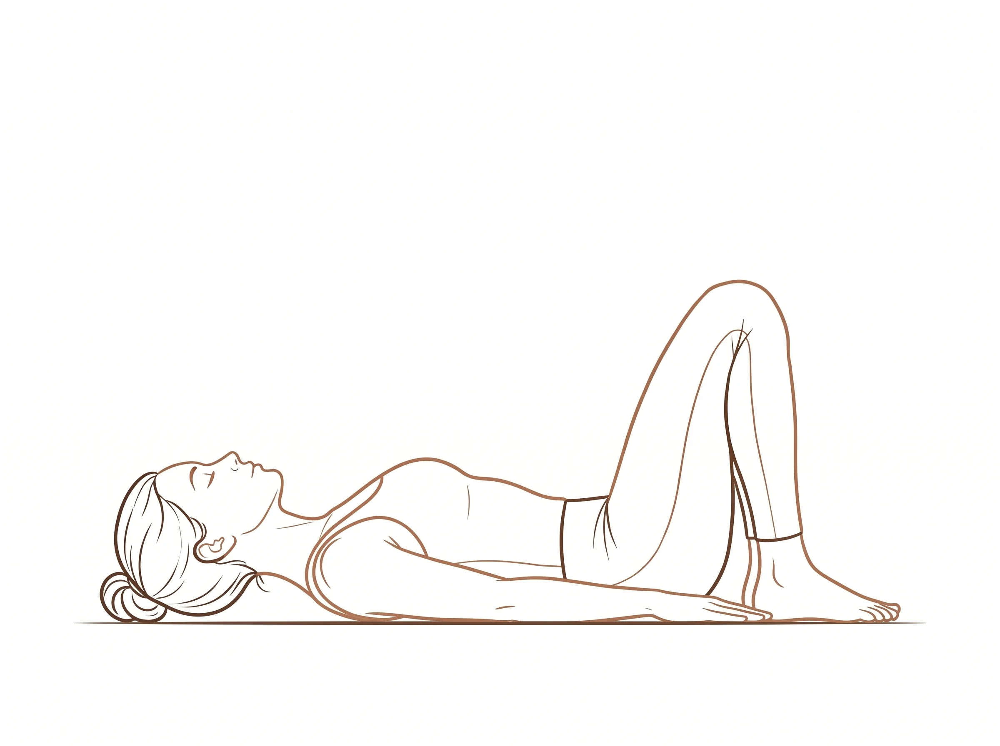
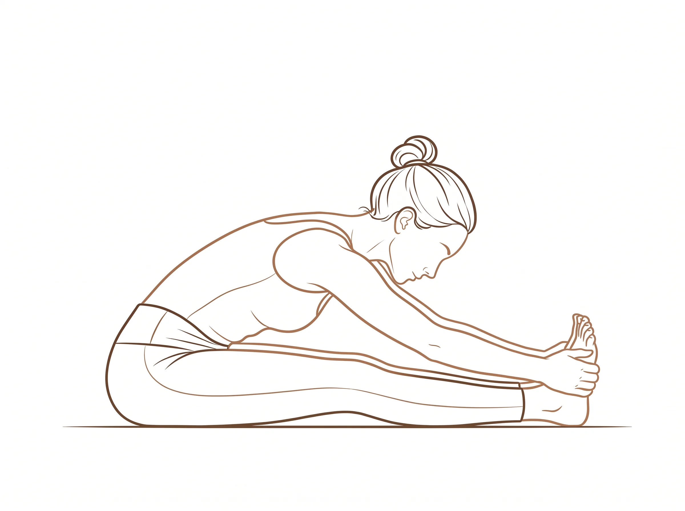

ॐ
Hatha Practical Exam
How do you build a bridge? · Setu Bandha
Tara
Markus
Hearth Venture Studio & Koda · Rishikesh 2026

Tara
Welcome · Injury Check
Markus
Theme · Bridge Question
Yogena Cittasya
Patañjali Invocation · Opening
Today's question: how do you build a bridge? The whole class is the answer. We'll offer you several ways to build — you choose. And sip water whenever you need — it's hot.
Yogena cittasya padena vācāṁ
Malaṁ śarīrasya ca vaidyakena
Yopākarottaṁ pravaraṁ munīnāṁ
Patañjaliṁ prāñjalir ānato'smi Ābāhu puruṣākāraṁ
Śaṅkha cakrāsi dhāriṇam
Sahasra śirasaṁ śvetaṁ
Praṇamāmi Patañjalim
Malaṁ śarīrasya ca vaidyakena
Yopākarottaṁ pravaraṁ munīnāṁ
Patañjaliṁ prāñjalir ānato'smi Ābāhu puruṣākāraṁ
Śaṅkha cakrāsi dhāriṇam
Sahasra śirasaṁ śvetaṁ
Praṇamāmi Patañjalim
To the one who purified the mind through yoga, speech through grammar, and the body through medicine — to that greatest of sages, Patañjali, I bow with folded hands.
To the one with a human form up to the arms, holding a conch, a discus, and a sword, crowned with a thousand white heads — to Patañjali, I bow.
To the one with a human form up to the arms, holding a conch, a discus, and a sword, crowned with a thousand white heads — to Patañjali, I bow.

Markus
Leads
Śītalī Prāṇāyāma
Cooling Breath · 5 Rounds
Curl the tongue into a tube. Inhale slowly through the curled tongue. Close the mouth. Exhale gently through the nose. The breath draws cool air across a moist surface — cooling the body from the inside.
Cue & Alternative
- Śītkārī alternative (for non-tongue-curlers): lips parted, teeth lightly closed, inhale through the teeth with soft hiss — same cooling effect
- 5 sec inhale · 5 sec exhale · 5 rounds, eyes closed
- We'll return to this breath for resets — after Surya, after Locust, during Apanasana
- Contraindications: low BP · asthma · active cold/cough — breathe naturally through the nose instead

Tara
Leads
Joint Warm-Up
Seated → Standing · Sūkṣma Vyāyāma
Move with your breath. Each circle bigger than the last.
Sequence
- Seated: flex / point toes × 8 · ankle circles × 8 each way
- Wrist circles × 8 each way · rise to standing
- Shoulder rolls × 8 backwards
- Neck half-circles — chin to chest, ear to shoulder · never roll the head back

Tara
Demo · Round 1
Markus
Demo · Round 2
Sūrya Namaskāra — Two Demos
Students Watch · Seated
Tara flows through Round 1 with clear verbal cues. Markus follows with Round 2. Students stay seated and watch the breath-movement pairing before practicing.
Sequence — 12 Poses
1Pranamāsana
exhale · prayer
exhale · prayer
2Hasta Utthānāsana
inhale · arms up
inhale · arms up
3Pādahastāsana
exhale · fold
exhale · fold
4Aśva Sañcalanāsana
inhale · lunge R back
inhale · lunge R back
5Parvatāsana
exhale · mountain
exhale · mountain
6Aṣṭāṅga Namaskāra
retain · 8-limbs
retain · 8-limbs
7Bhujaṅgāsana
inhale · cobra
inhale · cobra
8Parvatāsana
exhale · mountain
exhale · mountain
9Aśva Sañcalanāsana
inhale · lunge R fwd
inhale · lunge R fwd
10Pādahastāsana
exhale · fold
exhale · fold
11Hasta Utthānāsana
inhale · arms up
inhale · arms up
12Pranamāsana
exhale · return
exhale · return
Tara
Verbal Cues
Markus
Verbal Cues
Sūrya Namaskāra × 2 · + water / Śītalī
Students Practice · Two Full Rounds · Reset
Students run through on their own. Tara and Markus share verbal cueing: inhale reach up · exhale fold · inhale half lift · exhale step back · inhale Cobra · exhale Down Dog… two rounds, then a reset.
Watch For
- Locked knees in the forward fold — cue soft micro-bend
- Collapsed shoulders in Cobra — cue shoulder blades down & together
- Match each breath to its movement; do not rush
- Alternate lead leg: Round 1 = right back · Round 2 = left back
- After Round 2 — water sip · 3 rounds Śītalī · reset before Cat-Cow

Markus
Leads
Mārjaryāsana–Bitilāsana
Cat-Cow · 5 Rounds
Let the breath lead the movement — the body follows.
Alignment & Tips
- Tabletop — wrists under shoulders, knees under hips, tops of feet pressing down
- Cow (inhale): belly drops, chest and tailbone lift, gaze softens forward
- Cat (exhale): spine rounds, tailbone tucks, navel to spine, chin to chest
- Watch for collapsed shoulders — cue "press the floor away"

Markus
Leads
Pārśva Bālāsana
Thread-the-Needle · Both Sides
This is where your thoracic spine lives — the place most of your backbend will come from. Breathe into the space between the shoulder blades.
Alignment & Tips
- Inhale right arm up, opening the chest
- Exhale slide right arm under the left · shoulder & ear to mat · palm up
- Left hand presses the mat or walks forward for a deeper stretch
- 5 breaths · press back to tabletop · switch sides
- Watch for head collapse — ear heavy, not crunched

Tara
Leads
Adho Mukha Śvānāsana
Down Dog with Pedal
5 long breaths. Inhale lengthens the spine, exhale sinks the heels.
Alignment & Tips
- Hands shoulder-width, fingers spread, middle finger pointing forward
- Feet hip-width, heels reaching toward the mat — not forced
- Pedal the feet — bend one knee, then the other; hamstrings wake up
- Watch for rounded upper back — cue "bend the knees to lengthen the spine"

Tara
Leads
Añjaneyāsana
Low Lunge · Both Sides
Tuck the tailbone under and feel the stretch in the front of the back thigh. The psoas softens — the front body prepares to open for Bridge.
Alignment & Tips
- Front knee over front ankle · back knee on mat · top of back foot flat
- Back hip sinking forward and down
- Inhale arms sweep overhead · exhale tuck tailbone, open chest
- 5 breaths · switch · watch for front knee collapsing inward or past toes

Markus
Leads
Bhujaṅgāsana
Cobra · 2 Rounds
A gentle opening of the front body. Backbend from the upper back, not the arms. Shoulder blades draw down and together.
Alignment & Tips
- Hands under shoulders, elbows hugging in, legs active, tops of feet pressing down
- Inhale peel the chest off the mat, leading with the heart — not the chin
- Only as high as your back allows without pushing into the hands
- Round 2 slightly deeper · watch for low-back crunch — pubic bone pressing down
- First taste of backbending — preparing the spine for Bridge

Tara
Leads
Śalabhāsana
Locust · 2 Rounds
Reach the crown forward and the toes back. Length, not height. Waking the whole posterior chain for Bridge.
Alignment & Tips
- Round 1 — arms alongside body, palms down · lift chest, arms, legs · 5 breaths
- Round 2 — interlace hands behind low back, knuckles toward heels · lift · 5 breaths
- Watch for neck crunch — gaze down and slightly forward, neck long
- After Round 2 — water sip · 3 rounds Śītalī · reset before standing pair


Markus
Leads · Both Sides
Vīrabhadrāsana I → Pārśvottānāsana
Warrior I → Pyramid
Feel the front-body open, the back-body strong — both sides of the body meeting in the hip crease. Then: lengthen first, then fold.
Warrior I → Pyramid Flow
- From Down Dog step right foot forward · back heel down, foot at 45°
- Warrior I: rise, arms overhead · internally rotate back thigh, left hip forward
- Lift frontal hip bones toward ribs · sink front thigh toward parallel · 5 breaths
- Exhale straighten front leg, hands to hips, square hips fully forward
- Pyramid: exhale hinge forward, flat back first · hands to mat, blocks, or shins · 5 breaths
- Inhale rise · step back to Down Dog · second side
- Transition to floor: from Down Dog, lower knees · swing legs through to Daṇḍāsana · legs long, feet flexed, crown tall, 2 breaths · then roll down onto your back for Tara

Tara
Leads
Kati · Nitamba Prep
Pelvic Prep for Bridge
Before we build, we check the foundation. Wake the pelvis, the glutes, the low back — so the Bridge has somewhere to rise from.
Three-Part Prep
- Setup — supine, knees bent, feet flat hip-width, heels close to sit-bones, arms alongside body
- Pelvic tilts ×5 — exhale tuck tailbone, low back flattens · inhale small arch · slow, breath-led
- Glute activation ×5 — press feet into the mat, squeeze glutes without lifting · hold 3 breaths, release
- Small lifts ×3 — lift pelvis just 2–3 inches, hold 2 breaths, lower · feel the hamstrings wake
- Diagnostic moment — if glutes and hamstrings are firing, the body is ready to build

Markus
Leads · Peak
Setu Bandha Sarvāṅgāsana
Build Your Bridge · Peak · Anahata + Vishuddha
How do you build a bridge? The same way, and a different way, every time. We offer four builds — you choose the one that meets you today.
Phase 1 · Foundation (2 min) — everyone follows
- Feet flat, hip-width, parallel · heels close enough for fingertips to graze them
- Inhale press through four corners of feet · lift pelvis vertebra by vertebra
- Lift chest toward chin — not chin toward chest · back of neck long
- 5 breaths · slow release, vertebra by vertebra
Phase 2 · Four Builds Demo (2 min) — Markus shows, students watch
- Build 1 — Supported: block under sacrum (low / medium / high), or hands under low back, arms wide, palms up
- Build 2 — Hand-Supported: press palms into low back like a wall, elbows on the mat, chest lifts toward chin
- Build 3 — Classical: interlace hands under back, walk shoulder blades under, full active lift
- Build 4 — Eka Pāda: from classical, extend one leg toward the ceiling, toes pointing · 3–5 breaths · switch
Phase 3 · Choose & Hold (3 min)
- Students pick the build that meets them today · 5–8 breaths at their own pace, can repeat
- Bhāvanā — "The heart blooms open. The front body makes space. The back body holds the ground."
- Markus & Tara circulate with adjustments · block placed at top of mat = no adjustments wanted
Phase 4 · Group Exit (1 min)
- Release together · roll down slowly · knees knock gently · rest a moment and feel Anahata + Vishuddha

Markus
Leads
Apānāsana · Śītalī · Water
Knees-to-Chest · Cool the Body
We built the bridge. Now we release and cool. After a peak, the breath needs space and the body needs water.
Alignment & Tips
- Both knees into chest · hands around shins or backs of thighs · small rocks side to side
- Release · sip water · 3 rounds Śītalī to cool the body after the heat of peak
- Breath soft · spine neutralizes after the backbend
- Brief — a bridge between the peak and the wind-down

Tara
Leads
Supta Matsyendrāsana
Supine Twist · Both Sides
This is where the spine neutralizes after the backbend.
Alignment & Tips
- Arms out in a T · knees to chest · drop both knees to the right, gaze left
- Both shoulders stay grounded
- 5 breaths · switch sides

Tara
Leads
Paścimottānāsana
Seated Forward Fold · Choose A, B, or C
One more way to build — folding inward. Three versions, you choose the one that meets you.
Setup (everyone)
- Seated, legs extended long, feet flexed · sit on a folded blanket if low back rounds
- Inhale arms up, lengthen spine · exhale hinge from the hips, not the waist
Choose Your Variation
- A — Upright: sit tall, hands on thighs or shins, spine long, eyes soft · gentle lengthening
- B — Mid-fold: hands to shins or a strap around the feet · chest toward thighs, back stays long
- C — Full fold: hands to feet or beyond, forehead releasing toward shins · belly soft
- Hold 5–8 breaths · release slowly · the fold you choose is the right one today

Tara
Setup Cue
Markus
Bring-Back
Śavāsana
Corpse Pose · Complete Rest
Legs long, feet fall open, arms relaxed, palms up. Let the mat hold you.
Rest
- Tara delivers the setup cue, then silence holds the space
- Five minutes of complete stillness — no song, no reading
- Breath softens on its own — let it
- Bring-back (Markus): deepen breath · wiggle fingers & toes · roll to the right · press up to a seated position
Markus
Sings
Tara
Reads
Song & Poem
Students remain in Śavāsana
Markus sings and plays acoustic guitar — Song of Good Hope. This is followed by Tara reading the poem below.
I Know a Charm
I know the first charm, the one to cure pain and sickness, and lift grief from the heart.
I know a second charm that will heal with a touch.
I know a third charm that will turn aside the weapons of an enemy.
I know another charm to free myself from all bonds and locks.
I can catch an arrow in flight and take no harm.
I can quench a fire with my gaze.
I can sing the wind to sleep and calm a storm to bring a ship to shore.
I sing when a battle rages, and bring warriors home unscathed.
And I know the final charm, the greatest one. I cannot tell it, for it is the secret only YOU can find. That makes it the most powerful of all.

Tara
Sealing Mudra
Markus
Chant · Namaste
Sarve Bhavantu Sukhinaḥ
Shanti Mantra · Sealing Mudra
Sealing mudra (Tara leads): thumb to third eye — I honor the wisdom in me. Thumb to the heart — I honor the wisdom in you.
Om sarve bhavantu sukhinaḥ
Sarve santu nirāmayāḥ
Sarve bhadrāṇi paśyantu
Mā kaścid duḥkha bhāg bhavet Om śāntiḥ śāntiḥ śāntiḥ
Sarve santu nirāmayāḥ
Sarve bhadrāṇi paśyantu
Mā kaścid duḥkha bhāg bhavet Om śāntiḥ śāntiḥ śāntiḥ
May all beings be happy. May all be free from illness. May all see what is auspicious. May no one suffer. Om · peace · peace · peace.
Close With
- Both: "Namaste. Thank you for practicing with us."